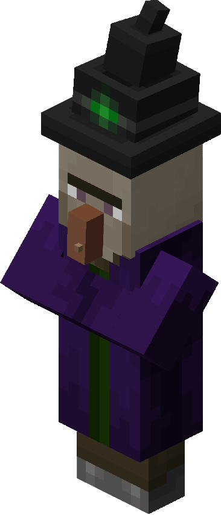
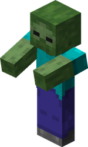

Esta granja se construye muy parecida a la granja de Mobs. Se hace un espacio grande para permitir el spawneo de los Slimes, ese espacio se coloca con 3 bloques de alto, y se tapa por completo, dejando un hueco en el centro
con una bajada, en la cual se colocan bloques de magma, para que cuando los slimes caigan, se hagan daño. En estos bloques de magma se coloca corrientes de agua, hacia unas tolvas q encima tienen escaleras
así se recoge el loot. para que los slimes vayan hacia el hueco, se coloca a la altura de la zona de spawneo de slimes, 2 cofres dobles, con vayas cubriendolo, y un Golem de Hierro
el cual atraera a los slimes y los llevará al hueco. En el techo de la granja se coloca una zona afk a 119 bloques más de altura del techo. puedes construirla gracias a este tutorial: TUTORIAL DE CONSTRUCCIÓN

Esta granja se construye, gracias a varias plataformas, que tienen una corriente de agua, y encima de la corriente, filas de hilo con ganchos con cuerda, los cuales
tienen un mecanismo con el cual abren unas trampillas las cuales liberan las corrientes de agua. Lo que llevan a las brujas hacia un hueco en el cual moriran debido a la sofocación con vagonetas. Puedes construir esta granja gracias a este tutorial: TUTORIAL DE CONSTRUCCIÓN

Esta es una de las granjas más conocidas y comunes de Minecraft. Se hace con varias plantas en forma de rombo (maximo 10) cada una con un observador y dispensador en el centro, cada dispensador con 1 balde de agua
y así hasta el último piso. El Último piso es el techo, y se coloca más grande q el resto de pisos. se le coloca un mecanismo para hacer un relog de redstone con el cual cada cierto tiempo, los dispensadores tiraran y recogeran el agua que tiran, y así tirar a los mobs hacia la plataforma base y que la plataforma base con sus corrientes de agua tire a los mobs al centro donde hay un gran hueco hacia unas tolvas. Puedes construir esta granja gracias a este tutorial: TUTORIAL DE CONSTRUCCIÓN